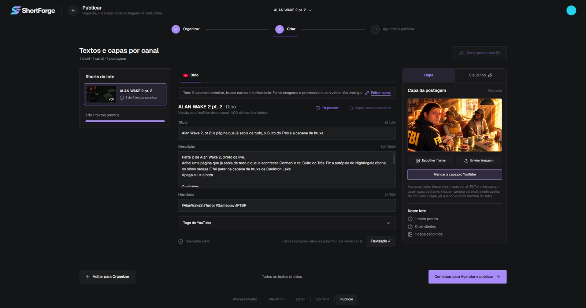
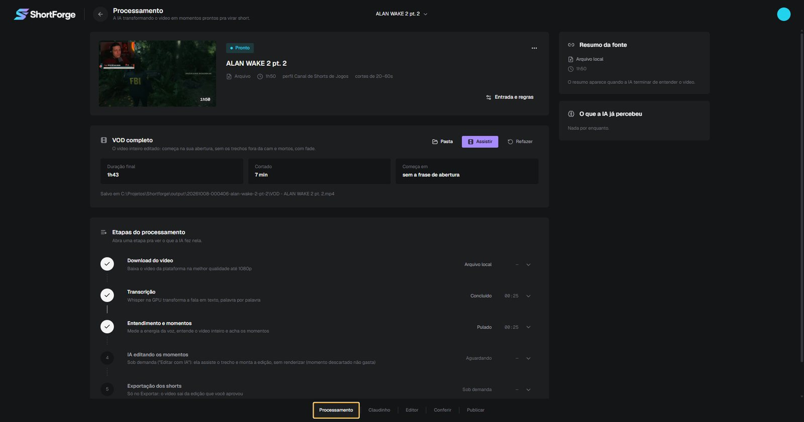
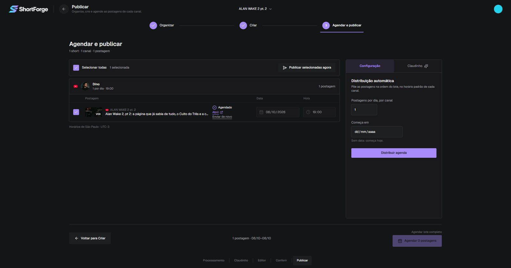

Acha os melhores momentos
A transcrição roda na placa de vídeo do seu PC, palavra por palavra. A IA lê a live inteira e separa os trechos com gancho, reação e desfecho.
O ShortForge transcreve a live no seu computador, encontra os momentos que viram short, edita no formato vertical e publica nas suas contas do YouTube, TikTok e Instagram, no horário que você escolher.

Um fluxo só, dentro de um app: você abre a gravação e sai com os vídeos agendados.
A transcrição roda na placa de vídeo do seu PC, palavra por palavra. A IA lê a live inteira e separa os trechos com gancho, reação e desfecho.
Timeline com cortes, legendas palavra por palavra, enquadramento na câmera, efeitos, sons e textos. Você ajusta tudo antes de exportar.
A live inteira em 16:9, sem os trechos mortos e sem o "já volto", pronta pro YouTube. Antes de codificar, o app pergunta onde salvar.
Título, descrição, legenda e hashtags no tom de cada canal, com capa tirada de um quadro do vídeo ou enviada por você.
Distribui as postagens pelos dias, no horário de cada canal. O YouTube agenda no próprio YouTube; TikTok e Instagram saem no horário marcado.
Conversa sobre o que publicar e quando, olhando os números reais do seu canal no YouTube, e anota o que foi testado pra comparar depois.
Escolha o arquivo da gravação ou cole o link do VOD. Dá pra ignorar o começo (a tela de "já começa").
O app sugere os trechos com nota e motivo. Você decide quais viram short e ajusta no editor.
Revise o que foi escrito pra cada canal e rede, troque a capa e marque como revisado.
Marque data e hora e confirme. Cada envio mostra o andamento e o link do vídeo publicado.


Você conecta as suas próprias contas. O app só usa as permissões abaixo, e só quando você manda.
youtube.uploadyoutube.readonlyyt-analytics.readonlyuser.info.basicvideo.uploadvideo.publishO app consulta as opções da sua conta no TikTok, mostra a prévia do vídeo e só envia depois que você confirma. Depois do envio, o processamento pode levar alguns minutos pra aparecer no perfil.
leitura básica da contapublicação de conteúdoO ShortForge não tem servidor nem conta própria. Detalhes na Política de Privacidade.
Não. Toda postagem passa por uma confirmação sua. No agendamento, você confirma na hora de agendar e o envio acontece no horário marcado.
Não existe servidor do ShortForge. O vídeo vai direto do seu computador pro YouTube, TikTok ou Instagram.
Windows, com placa de vídeo NVIDIA pra transcrição e codificação rápidas.
Sim, e é obrigatório: o app mostra as opções que a sua conta permite e não marca nenhuma por padrão.
No app, em Canais e contas → Sair da conta. Também dá pra revogar nas configurações de segurança do Google, do TikTok e do Instagram.
O ShortForge é desenvolvido por Dinozzera, criador de conteúdo que usa o app nos próprios canais. Dúvidas, pedidos de remoção de dados ou parcerias: oguigarciaph@gmail.com.